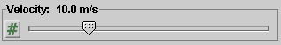
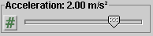
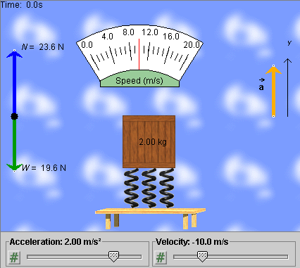
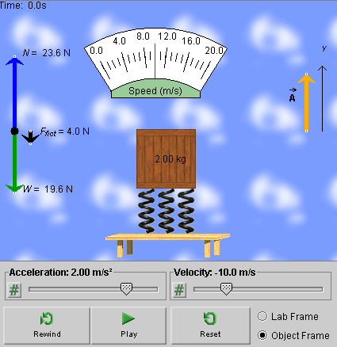

Instructions
This page is designed to get you started using the applet. The applet should be open. The step-by-step instructions on this page are to be done in the applet. You may need to toggle back and forth between instructions and applet if your screen space is limited.
 Setting the Block's Initial
Position and Velocity
Setting the Block's Initial
Position and Velocity
 Setting the Block's
Acceleration
Setting the Block's
Acceleration
 Changing the Frame of Reference
Changing the Frame of Reference
The applet lets you investigate the forces acting on a vertically moving block. The block is resting on springs that in turn are resting on a table. The table can move vertically with constant velocity or constant acceleration. This system is analogous to a person (block) standing on a bathroom scale (springs) resting on the floor of an elevator (table).
Reset  the
applet.
the
applet.
Move the system consisting of table, springs, and block downward, so that the table is just above the control panel, by clicking on any part of the system and dragging. This way there will be a maximal amount of room for the motion to follow.
Set the initial velocity to -10.0 m/s by means of the Velocity slider: 
The system's velocity can be only upward or downward, i.e., only in the positive or negative y-direction. Notice the direction of the y-axis displayed near the right edge of the applet window.
The quantity set with the Velocity slider is the system's y-component of velocity, vy. Let us refer to it as "velocity", for short.
All parts of the system, table, springs, and block, move in unison with the same velocity at any given instant. The applet does not simulate the initial oscillations that take place when there is a change in acceleration.

Continuing from the previous section, set the block's acceleration to 2.00 m/s2 by means of the Acceleration slider: 
Notice how the orange acceleration vector responds to this setting.
The quantity set with the Acceleration slider is the system's y-component of acceleration ay. Let us refer to it as "acceleration", for short.
When done, the applet display should look like the illustration in Figure 1 below.

Figure 1
Notice the Speedometer. The red needle is at 10 m/s, which is the speed corresponding to vy = -10.0 m/s.
Vary the acceleration by dragging the tip of the orange acceleration vector, and observe how the normal force N in the free-body diagram on the left and the compression of the springs change. The block's weight W does not change.
When done with these observations, set the acceleration back to 2.00 m/s2.
Continuing from the previous section, PLAY  the motion.
the motion.
Observe that the motion is downward at first, corresponding to the negative initial velocity of -10.0 m/s, but that it slows down, comes to a stop, and then changes into an upward motion. Observe how, at all times, the tab of the Velocity slider is moving to the right at a constant rate and how the values displayed by the slider are constantly increasing starting at -10.0 m/s. This is consistent with the positive and constant value of the acceleration.
REWIND  the
applet.
the
applet.
PLAY the motion again, and observe the speedometer needle. The speed decreases at first from 10 m/s to 0. Then it starts increasing again, when the motion has reversed direction. The motion is halted when the speed reaches 20 m/s.
Also observe that there are no changes in the forces during the motion as the velocity and position of the system are changing, as long as the acceleration stays the same.
In the previous sections, the applet has been in the Lab Frame mode by default.
The applet lets you view things from two frames of reference: the Lab frame and the Object frame. The Lab frame is the frame in which the laboratory is at rest. This is assumed to be an inertial frame, at least to a good approximation. The Object frame is the frame in which the "object", i.e., the block, springs, and table are at rest. This is a non-inertial frame if the block-springs-table system is accelerating relative to the Lab frame.
Rewind the applet, and select the Object frame by clicking the respective radio button.
Observe the change in the free-body diagram, displayed in Figure 2 below.

Figure 2
The free-body diagram now contains a third vector, shown in black. This vector is the fictitious force acting on the block in the non-inertial frame.
Also note that the acceleration vector is now labeled  , not
, not  as when viewing
things from the Lab frame.
as when viewing
things from the Lab frame.
The vector represented by the orange arrow whose
y-component is shown by the slider is the acceleration
of the Object frame relative to the Lab frame. The block's
acceleration '
relative to the Object frame is zero and does not need to be
illustrated.
PLAY the motion. You will see the table-springs-block system remain at rest while the background is moving, first upward, then downward. The background is fixed relative to the Lab frame.
The motion of the background that you can see in the Object frame looks like the reverse of the system's motion when viewed from the Lab frame. In the Object-Frame mode, the velocity shown by the slider is the velocity of the Object frame relative to the Lab frame. The system's velocity relative to the Object frame is zero at all times.